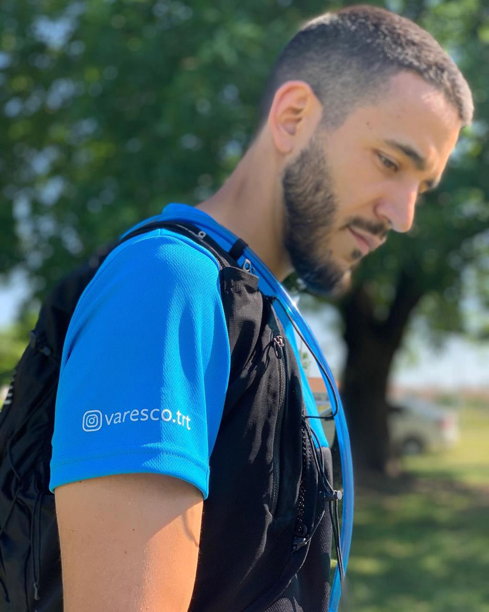
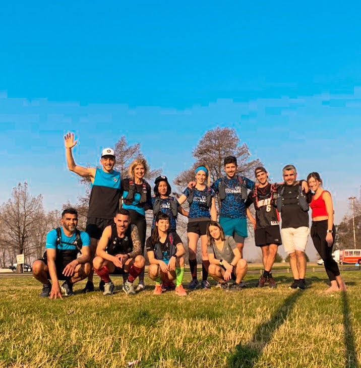

El Entrenador : Hernán Varesco
Este equipo está dirigido por Hernán Varesco, profesor Nacional de Educación física, graduado en el Colegio Ward, corredor y fundador del equipo. Él se encarga de realizar las planificaciones adaptadas a los diferentes niveles, plantear objetivos y organizar las diferentes actividades que realiza el equipo.

El equipo
El Varesco Trail Running Team es un equipo orientado a las carreras de montaña, nuestra mas grande pasión, sin embargo también participamos y entrenamos en carreras de calle. Al ser de Buenos Aires, y estar alejados de terrenos montañosos, tratamos de adaptar nuestros entrenamientos para no desentonar en las diferentes competencias en las que participamos.